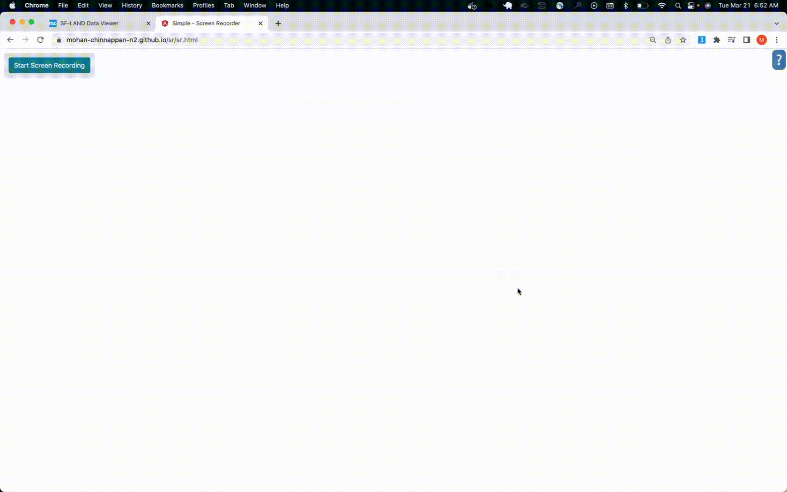
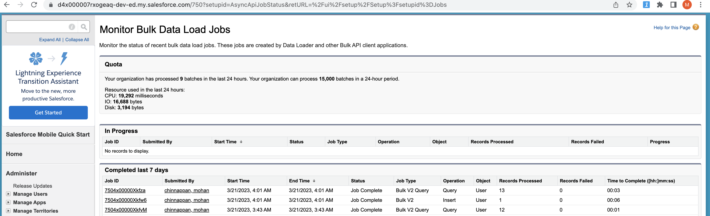
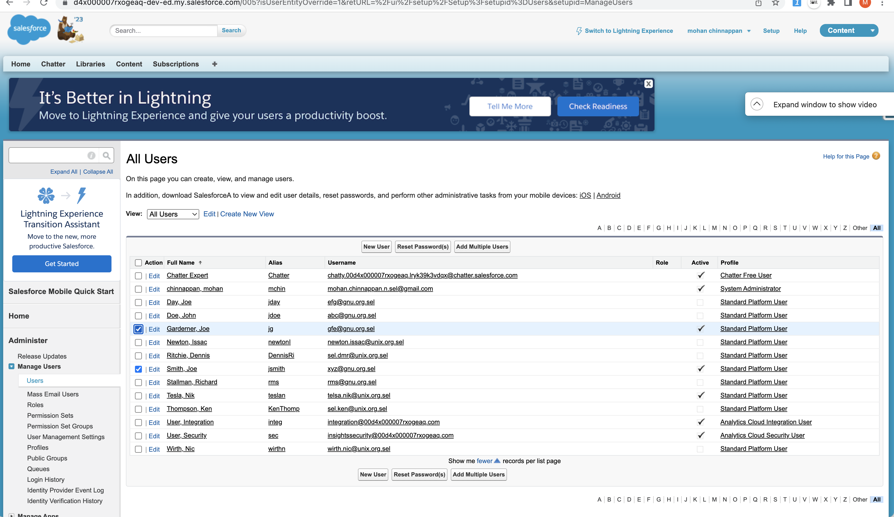

User Loading
Table of contents
Using CLI for BulkAPI 2.0
1. Query the current users in the org
sfdx mohanc:data:bulkapi:query -u mohan.chinnappan.n.sel@gmail.com -q ~/.soql/users.soql; pbcopy < ~/.soql/users.soql.csv ; open "https://mohan-chinnappan-n5.github.io/viz/datatable/dt.html?c=csv"
-- query used
SELECT Username, LastName, FirstName, Email, Alias,
LOCALESIDKEY,LANGUAGELOCALEKEY,EMAILENCODINGKEY,TIMEZONESIDKEY,PROFILEID,USERROLEID
FROM User
https://d4x000007rxogeaq-dev-ed.my.salesforce.com/services/data/v57.0/jobs/query
{
id: '7504x00000XkfyMAAR',
operation: 'query',
object: 'User',
createdById: '0054x000006Riv4AAC',
createdDate: '2023-03-21T10:43:31.000+0000',
systemModstamp: '2023-03-21T10:43:31.000+0000',
state: 'UploadComplete',
concurrencyMode: 'Parallel',
contentType: 'CSV',
apiVersion: 57,
lineEnding: 'LF',
columnDelimiter: 'COMMA'
}
=== JOB STATUS ===
=== JOB STATUS for job: 7504x00000XkfyMAAR ===
{
id: '7504x00000XkfyMAAR',
operation: 'query',
object: 'User',
createdById: '0054x000006Riv4AAC',
createdDate: '2023-03-21T10:43:31.000+0000',
systemModstamp: '2023-03-21T10:43:31.000+0000',
state: 'InProgress',
concurrencyMode: 'Parallel',
contentType: 'CSV',
apiVersion: 57,
jobType: 'V2Query',
lineEnding: 'LF',
columnDelimiter: 'COMMA',
numberRecordsProcessed: 0,
retries: 0,
totalProcessingTime: 0
}
WAITING...
{
id: '7504x00000XkfyMAAR',
operation: 'query',
object: 'User',
createdById: '0054x000006Riv4AAC',
createdDate: '2023-03-21T10:43:31.000+0000',
systemModstamp: '2023-03-21T10:43:32.000+0000',
state: 'JobComplete',
concurrencyMode: 'Parallel',
contentType: 'CSV',
apiVersion: 57,
jobType: 'V2Query',
lineEnding: 'LF',
columnDelimiter: 'COMMA',
numberRecordsProcessed: 12,
retries: 0,
totalProcessingTime: 157
}
==== Job State: JobComplete ====
=== Total time taken to process the job : 157 milliseconds ===
=== Total records processed : 12 ===
https://d4x000007rxogeaq-dev-ed.my.salesforce.com/services/data/v57.0/jobs/query/7504x00000XkfyMAAR/results
==== Output CSV file written into : /Users/mchinnappan/.soql/users.soql.csv ===
==== View the output file : /Users/mchinnappan/.soql/users.soql.csv using:
cat /Users/mchinnappan/.soql/users.soql.csv ===
=== JOB Failure STATUS ===
=== JOB Failure STATUS for job: 7504x00000XkfyMAAR === "sf__Id","sf__Error","Username","LastName","FirstName","Email","Alias","LocaleSidKey","LanguageLocaleKey","EmailEncodingKey","TimeZoneSidKey","ProfileId","UserRoleId"
===
"sf__Id","sf__Error","Username","LastName","FirstName","Email","Alias","LocaleSidKey","LanguageLocaleKey","EmailEncodingKey","TimeZoneSidKey","ProfileId","UserRoleId"
2. View the user using this app which is automatically opened by the above command #1

3. Edit the query results in your favorite app (I am using vim to do this, you can use apps like Excel) to add your user(s) to load

- I have my data input file looks like:
"Username","LastName","FirstName","Email","Alias","LocaleSidKey","LanguageLocaleKey","EmailEncodingKey","TimeZoneSidKey","ProfileId","UserRoleId"
"telsa.nik@unix.org.sel","Tesla","Nik","tesla@unix.org","teslan","en_US","en_US","UTF-8","America/Los_Angeles","00e4x000002b8InAAI",""
4. Let us load the data for the new user(s)
sfdx mohanc:data:bulkapi:load -u mohan.chinnappan.n.sel@gmail.com -f /Users/mchinnappan/.soql/users.soql.csv -e LF -o User
5. Query the user Object to check our loading

- Check the bulk data load jobs status for these jobs we created 
Apex Way
List<User> users = new List<User>();
users.add( new User (
Username = 'abc@gnu.org.sel',
Email = 'abc@gnu.org.invalid',
FirstName = 'John',
LastName = 'Doe',
Alias = 'jdoe',
TimeZoneSidKey = 'America/New_York',
LocaleSidKey = 'en_US',
EmailEncodingKey = 'ISO-8859-1',
ProfileId = [SELECT Id FROM Profile WHERE Name ='Standard Platform User' LIMIT 1].Id,
LanguageLocaleKey = 'en_US'
));
// users.add( new User(...)
Insert users;
- running it
sfdx mohanc:tooling:execute -u mohan.chinnappan.n.sel@gmail.com -a ~/.apex/addUsers.cls
apexCode: //String profile = 'Standard Platform User';
//Id profileId = [SELECT Id FROM Profile WHERE Name =: profile LIMIT 1].Id;
List<User> users = new List<User>();
users.add( new User (
Username = 'abc@gnu.org.sel',
Email = 'abc@gnu.org.invalid',
FirstName = 'John',
LastName = 'Doe',
Alias = 'jdoe',
TimeZoneSidKey = 'America/New_York',
LocaleSidKey = 'en_US',
EmailEncodingKey = 'ISO-8859-1',
ProfileId = [SELECT Id FROM Profile WHERE Name ='Standard Platform User' LIMIT 1].Id,
LanguageLocaleKey = 'en_US'
));
// users.add( new User(...)
Insert users;
compiled?: true
executed?: true
{
line: -1,
column: -1,
compiled: true,
success: true,
compileProblem: null,
exceptionStackTrace: null,
exceptionMessage: null
}

Is there a script which can create this apex code ?
- Yes!
cat users.csv
"Username","LastName","FirstName","Email","Alias","LocaleSidKey","LanguageLocaleKey","EmailEncodingKey","TimeZoneSidKey","ProfileName"
"gfe@gnu.org.sel","Garderner","Joe","jg@gnu.org.invalid","jg","en_US","en_US","ISO-8859-1","America/New_York","Standard Platform User"
"xyz@gnu.org.sel","Smith","Joe","xyz@gnu.org.invalid","jsmith","en_US","en_US","ISO-8859-1","America/New_York","Standard Platform User"
-
Download the script userApexgen.py
-
Run the script
python3 userApexgen.py users.csv > useradd.cls
cat useradd.cls
List<User> users = new List<User>();
users.add( new User (
Username = 'gfe@gnu.org.sel',
Email = 'jg@gnu.org.invalid',
FirstName = 'Joe',
LastName = 'Garderner',
Alias = 'jg',
TimeZoneSidKey = 'America/New_York',
LocaleSidKey = 'en_US',
EmailEncodingKey = 'ISO-8859-1',
ProfileId = [SELECT Id FROM Profile WHERE Name ='Standard Platform User' LIMIT 1].Id,
LanguageLocaleKey = 'en_US'
));
users.add( new User (
Username = 'xyz@gnu.org.sel',
Email = 'xyz@gnu.org.invalid',
FirstName = 'Joe',
LastName = 'Smith',
Alias = 'jsmith',
TimeZoneSidKey = 'America/New_York',
LocaleSidKey = 'en_US',
EmailEncodingKey = 'ISO-8859-1',
ProfileId = [SELECT Id FROM Profile WHERE Name ='Standard Platform User' LIMIT 1].Id,
LanguageLocaleKey = 'en_US'
));
Insert users;
- Run the apex code to add the users
sfdx mohanc:tooling:execute -u mohan.chinnappan.n.sel@gmail.com -a useradd.cls

Mass assign permission sets to users
- Querying User, PermissionSet and PermissionSetAssignment
SELECT Id
,Username
FROM User
SELECT
Id
,Name
,NamespacePrefix
,Description
,HasActivationRequired
,IsCustom
,IsOwnedByProfile
,Label
,LicenseId
,PermissionSetGroupId
,ProfileId
,Type
FROM PermissionSet
SELECT
Id
,AssigneeId
,IsActive
,ExpirationDate
,PermissionSetId
,PermissionSetGroupId
FROM PermissionSetAssignment
- Users
Id,Username
0054x000007avznAAA,sel.dmr@unix.org.sel
0054x000007avdcAAA,sel.ken@unix.org.sel
- Permissionsets to assign
Id,Name
0PS4x000002QxRNGA0,B2BBuyer
- Assignments
AssigneeId,PermissionSetId
0054x000007avznAAA,0PS4x000002QxRNGA0
0054x000007avdcAAA,0PS4x000002QxRNGA0